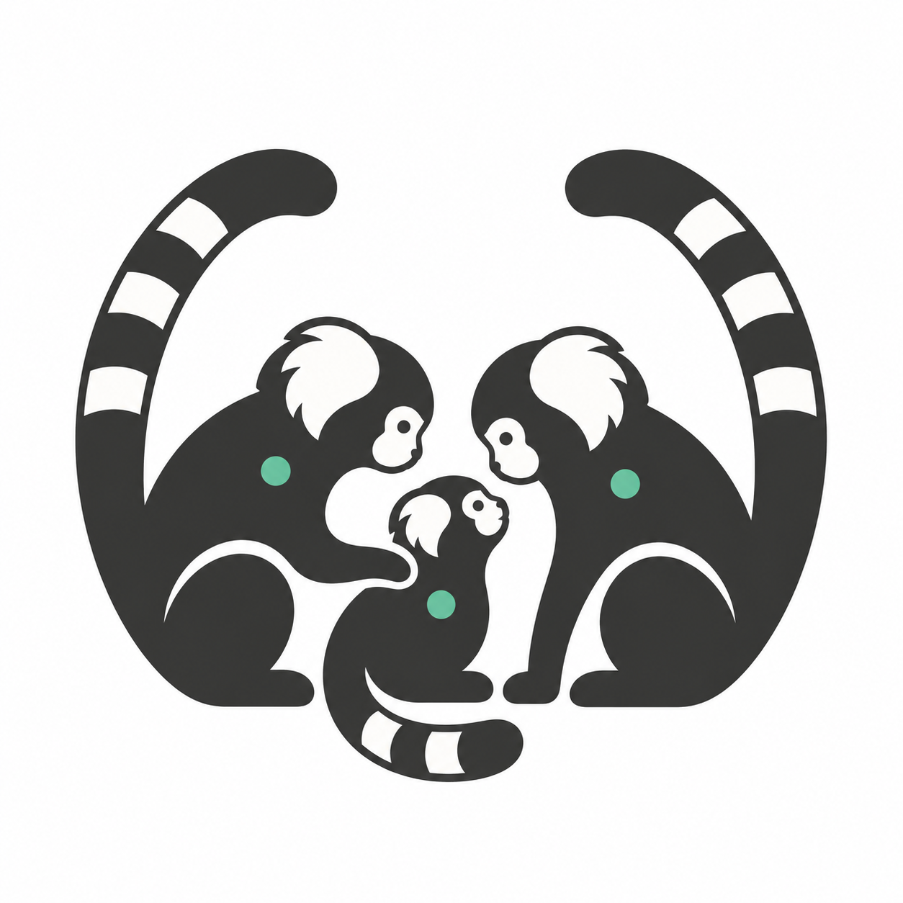
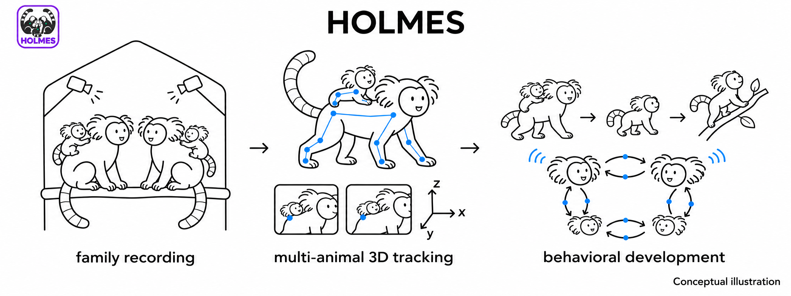

Continuous reconstruction of behavioraldevelopment in primate families
HOLMES
submit
Following how movement and social interactions develop together in primate families.

Abstract
Natural social behavior unfolds through continuous interactions between developing animals and their families. Measuring these processes requires following individuals across growth, changing postures, occlusion, and close physical contact. HOLMES combines memory-based instance segmentation, identity-aware temporal tracking, and multi-view 3D pose reconstruction to follow marmoset families in enriched home cages.
The framework links reconstructed trajectories to changes in locomotor independence, feeding and grooming, social orientation, and family-level coordination. Together with complementary pose, tracking, and behavior datasets, it supports the analysis of behavioral development from moment-to-moment interactions to longer developmental trajectories.
Dataset
Five complementary resources for pose estimation, tracking evaluation, behavior analysis, and behavior classification.
Scroll horizontally to view all datasets.
| Feature | Marmoset 3K | MarmoF | MarmoD | MarmoBe | MarmoAct |
|---|---|---|---|---|---|
| Type | Image | Image | Video | Video | Video |
| Keypoints | 16 | 16 | 5 | 16 | / |
| Labeled frames | 3273 | 100 | 480 | 0 | / |
| Annotated video frames | 3273 | 100 | 6000 | 0 | / |
| Total duration (s) | / | / | 4800 | 24300 | 6993 |
| Role | Single & Pair | Family (4 ids, 2 labeled) | Family (4 ids) | Family (4 ids) | Single (eat, groom, other) |
| Instances | 5019 (adult) | 200 (adult) | 11353 (adult) +9311 (infant) | / | 4373 (adult) +2620 (infant) |
| Usage | Pose estimation (Train&Test) | Pose estimation (Train&Test) | Evaluation | Behavior analysis | Behavior classification (Train&Test) |
Platform
Label individuals, review masks, track animals, and reconstruct 3D poses in the HOLMES desktop interface.
A short, silent platform walkthrough. Platform guide
Video
Research overview and demonstrations.
Code & citation
Find the code and documentation on GitHub.
@software{yuan_holmes,
author = {Yuan, Bing},
title = {HOLMES},
version = {0.1.2.dev0},
url = {https://github.com/bing021213/HOLMES}
}
Software metadata follows the repository’s CITATION.cff. The paper citation will be added when the manuscript is released.